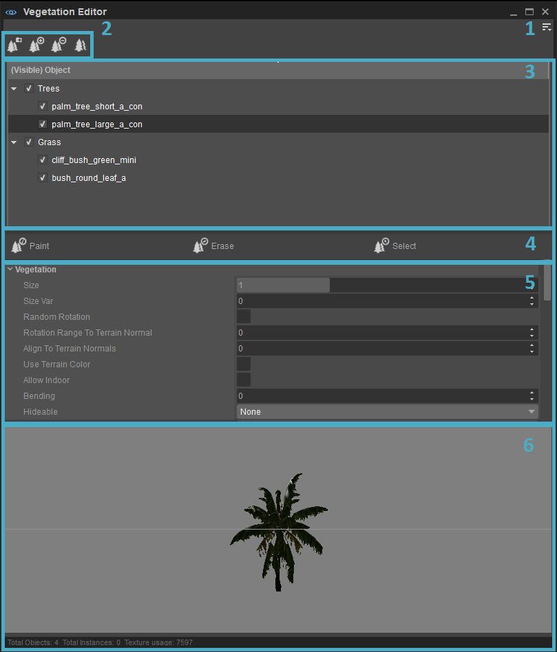
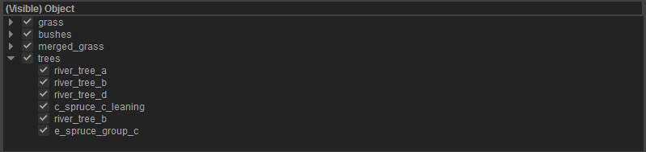
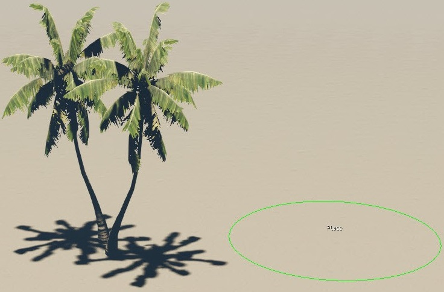
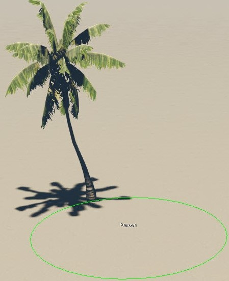
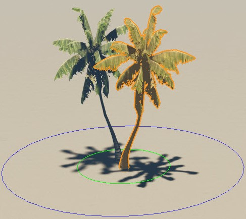
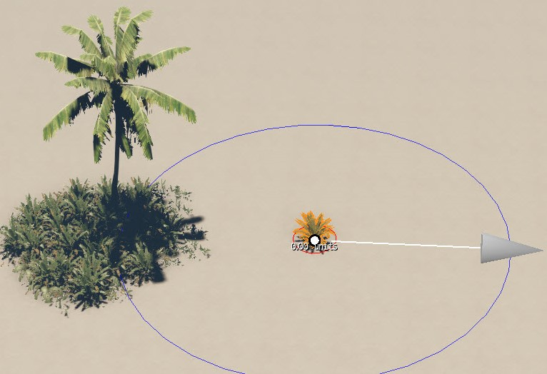

Overview
The Vegetation Editor provides a quicker way of populating, as well as fine tuning elements of flora within a scene.
From trees, grass and flowers to other naturally occurring elements such as rocks, dead trees and logs, nearly any mesh of .cgf extension can be assigned to the vegetation tool and painted across a created terrain.
Adding these objects via the Vegetation Editor rather than placing them as static objects/brushes to a level enables them to react to various interconnected physics-based systems, such as those of wind and similar environmental conditions, within the engine. Additionally, the tool functions by;
- Configuring categories or groups to which one or more meshes might be assigned,
- Defining the group's physical properties such as density, size, alignment, slope, minimum and maximum height,
- Applying the above properties to all included meshes when the group is painted upon a scene.
The Vegetation Editor can be accessed via Tools → Vegetation Editor and contains the following components: 
1. Menu
Accessed via the 
File
Option | Description |
|---|---|
Add Group | Within the Vegetation Editor, a group functions as a logical batch of similar objects. The Add Group option creates a new group, to which similar vegetation meshes such as those of grass, bushes and trees can be added. |
Add Object | Adds a new vegetation object to the selected group. If no group has been created, the Add Object option automatically creates one to which the new object is assigned. |
Import Vegetation Objects | Opens the file explorer to import objects previously exported as .veg files by the Export Vegetation Objects option described below. |
Export Vegetation Objects | Exports the selected vegetation objects, inclusive of their pre-defined settings, as a .veg file that can be imported across multiple levels. |
Edit
Option | Description |
|---|---|
Remove | Discards the selected objects and/or groups from the Editor. |
Group | This sub menu has two options:
The destination group name has to be specified in the prompt that appears and if the group of the provided name doesn't exist, a new one will be created with the selected object included. |
Objects | This sub menu has two options:
|
Tools
Option | Description |
|---|---|
Paint | Activates the Paint button and allows implementing the selected vegetation to the level. |
Erase | Activates the Erase button and allows erasing the selected vegetation that has been already implemented to the level. |
Select | Activates the Select button and allows selecting a vegetation object. |
Clear selected Vegetation Objects | Removes the selected object or group of objects from the level without eliminating them from the Vegetation Editor. |
Scale selected Vegetation Objects | Requests a user defined Scale factor by which the selected object or group of objects are to be resized. |
Randomly rotate all instances | Separately rotates instances of a selected object/group, such that each of their painted orientations appear distinct from each other. This is often essential to create natural looking foliage. |
Clear rotation | Restores the painted objects of the selected object/group to their default orientations. |
Merge Vegetation Objects | Replaces all painted vegetation objects within a selected group with the first object of that group. |
Remove duplicated Vegetation | Discards from a level those painted vegetation objects that fall within a distance of 0.1m from each other. |
View
Option | Description |
|---|---|
Show Preview | Toggles renders of the selected object within the Vegetation Editor's Preview Window. |
Toolbars
Option | Description | ||||
|---|---|---|---|---|---|
| Customize | Opens the toolbar customization window allowing users to create new toolbars within the Vegetation Editor window. | ||||
| Lock Toolbars | When disabled, the positions of toolbars and spacers within the Vegetation Editor window can be changed by drag and drop. | ||||
| Spacers | The following options allow users to use spacers in positioning their toolbars.
The Spacers menu options are only available when Toolbars → Lock Toolbars is disabled. | ||||
| Toolbars | Lists all default and custom toolbars created for the Vegetation Editor, allowing you to select which toolbar you'd like to hide or display. |
When a tool has a toolbar, whether this is a default one or a custom one, the options above are also available when right-clicking in the toolbar area (only when a toolbar is already displayed).
Help
Opens the documentation page for this tool.
2. Tool Bar
The icons of the Tool Bar correspond to the following Vegetation Editor functions.
Button | Name | Description |
|---|---|---|
Add Group | Creates a new group of default name to which any number of vegetation objects may be added. | |
Add Object | Opens a separate window to select vegetation objects from the project's asset folders that need to be added to the selected group. | |
Duplicate | Creates a copy of the selected vegetation object within the same group. | |
Remove | Removes the selected vegetation object from the Vegetation Editor and the level. |
3. Objects Overview
The Objects Overview window lists all assets that have been added to the Vegetation Editor and their respective groups. 
The visibility of individual objects/groups can be toggled from the check boxes situated against their respective listings as shown. Depending on whether the header, a group/object or an empty space within the Overview window has been right-clicked, the corresponding context menus might differ.
Header
Right-clicking on the header, containing the (Visible) Object text in the above image, allows the inclusion of additional columns to display various properties relevant to the vegetation objects listed in the Overview window.
Option | Description |
|---|---|
(Visible) Object | Displays, by default, a complete listing of the objects/group names currently in use by the Vegetation Editor. |
Count | Indicates the number of instances of an object that have been painted within a level. |
TextMem Usage | The amount of texture memory required by an object. |
Material | The material file utilized by an object. |
Elevation Min/Max | The minimum/maximum value of terrain elevation upon which an object may be painted. The values corresponding to each vegetation object are defined by its Brush & Vegetation Parameters. |
Slope Min/Max | The minimum/maximum angle of terrain at which an object may be painted, also defined by its respective Brush & Vegetation Parameters. |
Group
Right-clicking on a created Group within the Editor displays the following options:
Option | Description |
|---|---|
Add Object | Facilitates the addition of assets to the selected group as does the Add Object button of the Tool Bar. |
Rename Group | Provides the selected group with a custom name. |
Clear selected Vegetation Objects | Discards all objects of the selected group from the level without removing them from the Vegetation Editor. |
Scale selected Vegetation Objects | Resizes the objects of a selected group by a user defined Scale factor. |
Randomly rotate all instances | Separately rotates the painted instances of a group's objects. |
Clear rotation | Discards any prior rotations made to the group's objects, restoring them to their default orientations. |
Merge Vegetation Objects | Replaces all painted vegetation objects within a selected group with the first object of that group, as does the corresponding option within the Tools menu. |
Remove duplicated Vegetation | Also corresponding to the same option within the Tools menu, discards from a level those painted vegetation objects that fall within a distance of 0.1m from each other. |
Remove | Eliminates the group and its objects from both level and Vegetation Editor. |
Object
Right-clicking on a single vegetation object displays the same options as upon right-clicking on a group, with the exception of the following options:
Additional Option | Description |
|---|---|
Replace Vegetation Object | Opens a separate window to replace the currently selected object with an alternate one from the project/engine asset folders. |
Duplicate | Creates a copy of the selected vegetation object within the same group, as does the Duplicate button of the Tool Bar and the corresponding option listed under Edit → Objects. |
Empty Space
A right-clicked blank space without any specific group or object selected displays the following options:
Option | Description |
|---|---|
Add Object | Adds an object to the previously accessed group of objects. |
Add Group | Adds a group to the list of assets/groups in current use by the Vegetation Editor. |
4. Editor Buttons
The Paint, Erase and Select buttons placed below the Overview Window have the following functions:
Button | Description |
|---|---|
With specific vegetation objects/groups of objects selected within the Overview Window, the Paint button allows these to be placed within a level area as per their specified Brush & Vegetation Parameters by clicking/dragging across the Viewport with the LMB. Refer to the Vegetation Editor Concepts segment of this document for a breakdown of painting vegetation objects. | |
Working contrary to the Paint button, Erase allows a specific vegetation object/group of objects to be discarded from a level area by clicking/dragging across the Viewport with the LMB. | |
Permits selecting a painted vegetation object as these cannot be picked using the standard Select Mode for object manipulation. |
5. Brush & Vegetation Parameters
The option to adjust various parameters corresponding to the vegetation objects that need painting across a level appears when the Paint button is active.
A single Brush parameter, Radius, influences the size of the brush to which the selected objects have been assigned for painting across a given level terrain, while numerous other Vegetation parameters can be tweaked to influence these objects. These parameters and their effects are described in the table below.
Holding the ALT key while dragging the LMB up or down across the Viewport also increases or decreases the Brush Radius.
Parameter | Description | Notes |
|---|---|---|
Size | Directly affects the size of the selected vegetation object in the 0 -3 value range where the value 1 corresponds to the original/default scale of the object model. | Takes effect on the next/new Brush stroke. |
SizeVar | Specifies the factor in the 0 - 1 value range by which multiple instances of an object assigned to a Brush are to vary with each Brush stroke/application. 0 - Corresponds to zero variation among object instances. 1 - Corresponds to maximum variation. This factor is applied to the size of the object as defined by the Brush's Size parameter, and is best kept to minimal values in the 0.1 - 0.3 range. | Takes effect on the next/new Brush stroke. |
Random Rotation | When checked, each object assigned to a Brush and its corresponding instances are randomly rotated so that no two object assets resemble each other in orientation. | Takes effect on the next/new Brush stroke. |
Rotation Range To Terrain Normal | Specifies the extent to which the vegetation objects are rotated to correspond with the underlying terrain surface's normal; such that, values greater than 0 correspond to a greater extent of rotation whereas 0 means no rotation. | Takes effect on the next/new Brush stroke. |
Align To Terrain Normals | Dictates how an object aligns itself to the terrain with each Brush stroke in the 0 - 100 value range. 0 - Causes the object to ignore the angle of terrain and align itself vertically. 50 - Aligns the object halfway between vertical and full terrain alignment. 100 - Fully aligns the object along the terrain normal. | Takes effect on the next/new Brush stroke and also influences previously painted instances of the selected object. |
Use Terrain Color | When checked, all painted and non-painted vegetation object models derive their color from the underlying terrain. This is useful in having vegetation objects blend in more naturally with the environment. | Takes effect on the next/new Brush stroke and also influences previously painted instances of the selected object. |
Allow Indoor | Enables vegetation objects contained in Vis Areas to be rendered within a level. | Takes effect on the next/new Brush stroke and also influences previously painted instances of the selected object. |
Bending | Defines the degree to which vegetation objects sway in response to the environmental wind effects, such that 0 corresponds to zero bending/swaying effect. The magnitude of wind effects within a level is influenced by that of the global Wind Vector value set in the Environment Editor (Old as of 26/2). | The value of this field is ignored when the AutoMerge parameter is checked for the selected vegetation object. |
Hideable | Deprecated - Can be set to hideable so that AI used it as hard cover, or to secondary so that AI used it as soft cover. | |
Player Hideable | Deprecated - Player can use object for cover. | |
Ground Decal Material | Decal materials refer to image patterns that may be placed under vegetation object models; examples include concrete or mud type designs, for instance. Custom materials can be imported from the project's Assets directory via the | Takes effect on the next/new Brush stroke and also influences the previously painted objects of a level. |
Grow On | Dictates where the objects assigned to a brush might be placed.
Given a palm tree painted by the Vegetation Editor and a brush type object such as a fishing cabin, the palm tree may be moved and placed at a point on the roof of the cabin with Brushes Only/Terrain and Brushes active. | Takes effect on the next/new Brush stroke and also influences the previously painted objects of a level. |
Auto Merged | When enabled, CRYENGINE's physics, explosions, local and global wind like subsystems are combined to create realistic vegetation effects with Merged Mesh technology. | Requires a specific geometric setup for the vegetation objects to use Merged Mesh technology. |
Stiffness | Dictates the extent to which Auto Merged enabled vegetation reacts to Merged Mesh physics such that values greater than 0 correspond to a greater stiffness. | Requires the Auto Merged option enabled to take effect. |
Damping | Specifies how responsive Auto Merged enabled vegetation is to the effects of physics damping implemented by Merged Mesh technology such that values greater than 0 correspond to an increased responsiveness. | Requires the Auto Merged option enabled to take effect. |
Variance | Defines a factor by which the wind direction is randomized during wind deformation simulations of Auto Merged enabled vegetation. Values great than 0 means an Increased randomization. | Requires the Auto Merged option enabled to take effect. |
Air Resistance | Specifies the extent to which Auto Merged enabled vegetation objects sway in response to Merged Mesh wind effects, similar to how the Bending parameter influences non-Auto Merged objects. Values greater than 0 mean an increased resistance. | Requires the Auto Merged option enabled to take effect. |
Pickable | Allows objects painted by the Vegetation Editor to be picked up by player characters with one/two hands, and/or dropped, within a level. | Objects require a specific setup in a separate Digital Content Creation tool in order to be pickable. |
AI Radius | Deprecated - Used to tell the AI how wide the object is. | |
Density | Dictates the proximity of the various vegetation objects assigned to a Brush, such that higher values will cause these to be placed further apart from each other upon a single Brush stroke. The density setting ranges from 0 to 100. This value represents the distance between each vegetation. A small Brush Radius with high Density settings will prevent objects from being painted; ensure that this Radius is adjusted accordingly. | Takes effect on the next/new Brush stroke. |
Elevation Min/Max | Defines the minimum/maximum values of terrain elevation within which an object of vegetation may be painted by the Brush. Painting underwater vegetation requires an ElevationMin value lower than the height of the ocean within a level; 0 is recommended. | Takes effect on the next/new Brush stroke. |
Slope Min/Max | Defines the minimum/maximum angle of terrain within which an object may be painted, ranging in value from 0 to 89.9 degrees. A minimum slope value greater than 0 will prevent objects from being painted on flat terrain. | Takes effect on the next/new Brush stroke. |
Cast Shadow Min Spec | Specifies the minimum graphical specification of the level at and above which an object's shadows are to be rendered. The values that this parameter might take include the following options: Never - No shadows rendered for the selected object, irrespective of the level's graphical spec setting. Low - Shadows rendered only when the level's graphical spec has been set to Low or higher. Medium - Object shadows rendered only on Medium, High and Very High spec levels. High - Object shadows rendered only on High and Very High spec levels. Very High: Object shadows rendered only on levels of Very High graphical spec. | Takes effect on the next/new Brush stroke and also influences the previously painted objects of a level. |
Dynamic Distance Shadows | When checked, only dynamic shadows will be cast by the selected vegetation objects in response to sunlight; this, even when the object is physically distant. | Takes effect on the next/new Brush stroke and also influences the previously painted objects of a level. |
Global Illumination | Enables voxel-based global illumination for the selected vegetation object, in turn producing more realistic lighting effects that take into consideration both direct and indirect sources of light. | Takes effect on the next/new Brush stroke and also influences the previously painted objects of a level. |
Offline Procedural | Allows users to export procedural vegetation as normal permanent vegetation objects. This option solves problems like missing objects on dedicated servers and incomplete AI navmesh. This feature needs to be also enabled in the Level Settings panel. For more information, please refer to the Level Settings page. | It is possible to distribute procedurally not only the small detailed objects but also the full-size trees, allowing users to create fully procedural massive forests easily. |
Use Instancing | Enables the Instancing feature. With this feature enabled, the vegetation painter merges individual vegetation objects into a form of batch to reduce the number of drawbacks to potentially improve the overall performance. | This feature is non-functional at the moment and it will be enabled in a future CRYENGINE release. |
Sprite Dist Ratio | Deprecated - Adjusts the distance when the sprite rendering should be enabled. | |
Lod Dist Ratio | Influences the rate at which a placed vegetation object transitions between varying levels of detail (LOD) as the distance from which it is viewed changes such that lower values cause for a slower transition between LOD's and higher values correspond to faster transitions. | Takes effect on the next/new Brush stroke. |
Max View Dist Ratio | Adjusts the maximum view distance per vegetation object. | |
Material | Assigns a custom material to the objects of a Brush, imported using the | Takes effect on the next/new Brush stroke and also influences the previously painted objects of a level. |
Use Sprites | Deprecated - Turns on / off the use of sprite rendering in the distance. | |
Min Spec | Specifies the level's setting of graphical detail (low/medium/high/very high/detail spec) within and above which the selected objects are to be rendered. All - Objects are rendered across all settings of graphical spec. Low - Objects are rendered across levels of Low and/or greater graphical spec. Medium - Objects are rendered across levels of Medium and/or greater graphical spec. High - Objects are rendered across High and/or Very High spec levels only. Very High - Objects are rendered on Very High spec levels only. | Takes effect on the next/new Brush stroke and also influences the previously painted objects of a level. |
Ignore Terrain Layer Blend | Controls blending with terrain layers. | For more information, please refer to the Terrain Layer Blending into Objects page. |
Layer Frozen | Deprecated - Turns on the frozen layer material settings. | |
Layer Wet | Deprecated - Turns on the wet layer material settings. | |
Object | Points to the mesh file utilized by the Brush's objects, which can be replaced with an alternate mesh from the project's Asset directory using the Clicking | Takes effect on the next/new Brush stroke and also influences the previously painted objects of a level. |
Use On Terrain Layers | Lists and allows the selected vegetation object to be procedurally generated upon specific layers of terrain texture. When a specific terrain layer has been checked under this option, that layer will automatically generate instances of the selected vegetation object when painted/flooded upon the terrain using the Terrain Editor. This procedural generation abides by the Brush parameters corresponding to the selected object at all times. | Takes effect on the next/new texture layer application, and also influences the previously painted instances of that layer. |
6. Preview Window
Sample renders of selected vegetation objects are displayed within the preview window, provided the View → Show Preview option has been checked.
Functionality
Paint
Within the context of the Vegetation Editor, painting refers to the placement of vegetation object meshes within a level.
With the desired meshes imported/organized within the Objects Overview window using the Tool Bar and the options described in preceding sections, the Paint editor button assigns these to a Brush of specified radius. A circle of green outline represents the Brush and its size in the Viewport, provided Paint is active.

Clicking upon the terrain within the Viewport places the selected vegetation within a level in accordance with the established Vegetation Parameters, and multiple objects can be painted all at once by dragging across the terrain with the left mouse button. Alternatively, the Brush may be caused to paint only a single instance of the selected objects by holding the CTRL key when clicking on the Viewport.
Erase
Erase works contrary to the Paint editor button, such that with a select list of objects/groups selected within the Objects Overview window, clicking upon previously placed vegetation within the Viewport will cause the selected objects to be discarded.
Holding the SHIFT key with the Paint button active converts its functionality to that of the Erase button, and vice versa. At any point, a Brush's current functionality is indicated within the Viewport by the text Place/Remove at the center of the green circle.

Select
Placed vegetation objects may only be selected within the Viewport with the Select button active.
Doing so highlights the selected object, surrounding it with concentric green and blue rings, allowing it to be moved/rotated/scaled as a standard object. In the image below, the tree has been selected, which is indicated by the green and blue ring around the tree.
Multiple vegetation objects can be selected by individually picking each with the CTRL key pressed, or by dragging across the Viewport with the left mouse button.

Pressing the 2 key when an object is selected activates Rotate mode, allowing the object to be rotated, while pressing 3 activates Scale mode allowing the object to be resized.
The following table summarizes the Paint, Erase and Select functionalities and their corresponding mouse+key combinations.
Action / Key | Mode | Effect |
|---|---|---|
LMB | Paint | Paints multiple instances of the selected vegetation objects as per defined Vegetation Parameters. |
LMB+CTRL | Paint | Paints only a single instance of the selected objects. |
LMB+SHIFT | Paint | Inverts the Brush to Erase mode. |
LMB | Erase | Discards painted instances of vegetation objects selected within the Objects Overview window. |
LMB+SHIFT | Erase | Inverts the Brush to Paint mode. |
LMB | Select | Individually picks a painted object to be moved, rotated, scaled or edited as desired. |
LMB+CTRL/Mouse Drag | Select | Selects multiple objects to be added to a current selection; releasing the LMB finalizes the selection. |
Move/Rotate/Scale Transformations
With one or more objects selected via the Select editor button, vegetation may be moved, rotated and/or scaled as standard objects using the Axis Gizmo interface.
Alternatively,
- Selected objects may be rotated by holding CTRL+ALT and moving the mouse cursor up/down over one of the selected objects in the Viewport,
- Scaled by holding ALT and moving the mouse cursor up/down over one of the selected objects in the Viewport.
Note that in each case the target objects will have to be selected via the Select editor button.
Invalid Move Transformations
When handling extremely dense vegetation objects that have the Auto-Merge option active, moving an object's instance to an invalid location, such as where there might be insufficient room due to overcrowded vegetation, will cause the instance to be restored to its last valid location and highlighted by a red circle as shown.

This is so as to prevent resource wastage, the overcrowding of assets and provides for easier control over the placement of vegetation objects.